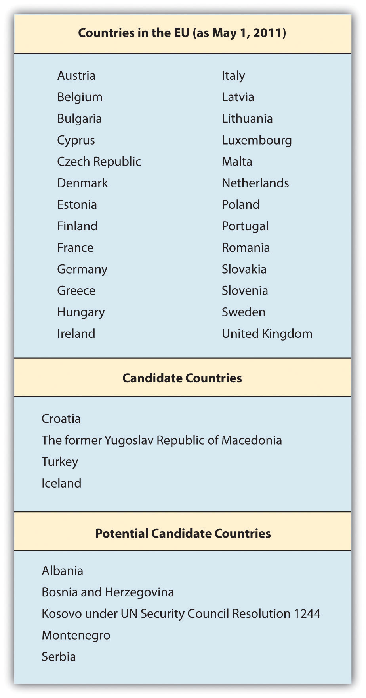

Regional economic integration has enabled countries to focus on issues that are relevant to their stage of development as well as encourage trade between neighbors.
There are four main types of regional economic integration.
In the past decade, there has been an increase in these trading blocs with more than one hundred agreements in place and more in discussion. A trade bloc is basically a free-trade zone, or near-free-trade zone, formed by one or more tax, tariff, and trade agreements between two or more countries. Some trading blocs have resulted in agreements that have been more substantive than others in creating economic cooperation. Of course, there are pros and cons for creating regional agreements.
The pros of creating regional agreements include the following:
The cons involved in creating regional agreements include the following:
There are more than one hundred regional trade agreements in place, a number that is continuously evolving as countries reconfigure their economic and political interests and priorities. Additionally, the expansion of the World Trade Organization (WTO) has caused smaller regional agreements to become obsolete. Some of the regional blocs also created side agreements with other regional groups leading to a web of trade agreements and understandings.
The North American Free Trade Agreement (NAFTA) came into being during a period when free trade and trading blocs were popular and positively perceived. In 1988, the United States and Canada signed the Canada–United States Free Trade Agreement. Shortly after it was approved and implemented, the United States started to negotiate a similar agreement with Mexico. When Canada asked to be party to any negotiations to preserve its rights under the most-favored-nation clause (MFN), the negotiations began for NAFTA, which was finally signed in 1992 and implemented in 1994.
The goal of NAFTA has been to encourage trade between Canada, the United States, and Mexico. By reducing tariffs and trade barriers, the countries hope to create a free-trade zone where companies can benefit from the transfer of goods. In the 1980s, Mexico had tariffs as high as 100 percent on select goods. Over the first decade of the agreement, almost all tariffs between Mexico, Canada, and the United States were phased out.
The rules governing origin of content are key to NAFTA. As a free trade agreement, the member countries can establish their own trading rules for nonmember countries. NAFTA’s rules ensure that a foreign exporter won’t just ship to the NAFTA country with the lowest tariff for nonmember countries. NAFTA rules require that at least 50 percent of the net cost of most products must come from or be incurred in the NAFTA region. There are higher requirements for footwear and cars. For example, this origin of content rule has ensured that cheap Asian manufacturers wouldn’t negotiate lower tariffs with one NAFTA country, such as Mexico, and dump cheap products into Canada and the United States. Mexican maquiladoras have fared well in this arrangement by being the final production stop before entering the United States or Canada. Maquiladoras are production facilities located in border towns in Mexico that take imported materials and produce the finished good for export, primarily to Canada or the United States.
Canadian and US consumers have benefited from the lower-cost Mexican agricultural products. Similarly, Canadian and US companies have sought to enter the expanding Mexican domestic market. Many Canadian and US companies have chosen to locate their manufacturing or production facilities in Mexico rather than Asia, which was geographically far from their North American bases.
When it was introduced, NAFTA was highly controversial, particularly in the United States, where many felt it would send US jobs to Mexico. In the long run, NAFTA hasn’t been as impactful as its supporters had hoped nor as detrimental to workers and companies as its critics had feared. As part of NAFTA, two side agreements addressing labor and environmental standards were put into place. The expectation was that these side agreements would ensure that Mexico had to move toward improving working conditions.
Mexico has fared the best from NAFTA as trade has increased dramatically. Maquiladoras in Mexico have seen a 15 percent annual increase in income. By and large, Canadians have been supportive of NAFTA and exports to the region have increased in the period since implementation. “Tri-lateral [merchandise] trade has nearly tripled since NAFTA came into force in 1994. It topped $1 trillion in 2008.”Foreign Affairs and International Trade Canada, “Fast Facts: North American Free Trade Agreement,” December 15, 2009, accessed December 30, 2010, http://www.international.gc.ca/trade-agreements-accords-commerciaux/agr-acc/nafta-alena/fast_facts-faits_saillants.aspx?lang=eng.
Given the 2008 global economic recession and challenging impact on the EU, it isn’t likely that NAFTA will move beyond the free-trade zone status to anything more comprehensive (e.g., the EU’s economic union). In the opening case study, you read about the pressures on the EU and the resistance by each of the governments in Europe to make policy adjustments to address the recession. The United States, as the largest country member in NAFTA, won’t give up its rights to independently determine its economic and trade policies. Observers note that there may be the opportunity for NAFTA to expand to include other countries in Latin America.William M. Pride, Robert James Hughes, and Jack R. Kapoor, Business, 9th ed. (Boston: Houghton Mifflin, 2008), 89, accessed April 30, 2011, http://books.google.com/books?id=z2tEhXnm1rAC&pg=PA88&lpg=PA88&dq=will+chile+join+nafta+2009 &source=bl&ots=iohSe7YV0E&sig=BjQr2KOx0lsrAGhv5vMqeb9LhFU&hl=en&ei=hLu8 TZ3LPNDAgQeZusjqBQ&sa=X&oi=book_result&ct=result&resnum=6&ved=0CDoQ6A EwBQ#v=onepage&q=will%20chile%20join%20nafta%202009&f=false. Chile was originally supposed to be part of NAFTA in 1994, but President Clinton was hampered by Congress in his ability to formalize that decision.David A. Sanger, “Chile Is Admitted as North American Free Trade Partner,” New York Times, December 12, 1994, accessed April 30, 2011, http://www.nytimes.com/1994/12/12/world/chile-is-admitted-as-north-american-free-trade-partner.html. Since then, Canada, Mexico, and the United States have each negotiated bilateral trade agreements with Chile, but there is still occasional mention that Chile may one day join NAFTA.Anthony DePalma, “Passing the Torch on a Chile Trade Deal,” New York Times, January 7, 2001, accessed April 30, 2011, http://www.nytimes.com/2001/01/07/business/economic-view-passing-the-torch-on-a-chile-trade-deal.html.
Mexico, NAFTA, and the Maquiladoras
The Mexican economy has undergone dramatic changes during the last decade and a half as the country has become integrated into the global marketplace. Once highly protected, Mexico is now open for business. Successive governments have instituted far-reaching economic reforms, which have had a major impact on the way business is conducted. The scale of business has changed as well. Forced to compete with large multinationals and Mexican conglomerates, many traditional family-owned firms have had to close because they were unable to compete in the global marketplace.
NAFTA has added to the already-strong US influence on Mexico’s corporate and business practices. In particular, competitiveness and efficiency have become higher priorities, although company owners and managers still like to surround themselves with people they know and to groom their sons and sometimes their daughters to be their successors. US influence is also pervasive in the products and services offered throughout Mexico.
Mexico has always had a strong entrepreneurial business culture, but until NAFTA, it was protected from the pressures of international finance and the global marketplace. Business and particularly interpersonal business relationships were viewed as something that should be pleasurable, like other important aspects of life.
Long-term relationships are still the foundation on which trust is established and business is built. In Mexico, patience and the willingness to wait are still highly valued—and necessary—in business transactions. This is slowly changing, spurred in part by an aggressive cadre of young professionals who pursued graduate education in the United States.
Since the mid-1960s, production facilities known as maquiladoras have been a regular feature of Mexican border towns, especially along the Texas and New Mexico borders. US multinational companies, such as John Deere, Zenith, Mattel, and Xerox, run the majority of the more than 3,600 maquiladoras in northern Mexico. Billions of dollars’ worth of products—from televisions to clothes to auto parts—are assembled in maquiladoras and then shipped back, tax free, to the United States for sale to US consumers.
Maquiladoras employ more than a million Mexicans, mostly unskilled women in their twenties and early thirties who work long hours. Wages and benefits are generally poor but much better than in the rest of Mexico. The huge growth in trade between the United States and Mexico has greatly expanded the role—and scale—of these assembly operations.
Along with the benefits, challenges have also come with the increased trade. A large number of Mexicans are concerned that wealth is distributed more unevenly than ever. For example, many commentators see the political situation in the state of Chiapas as underscoring the alienation large groups have suffered as a result of the opening of the Mexican economy to global forces. A rural region in southern Mexico, Chiapas is home to extremely poor Mayan, Ch’ol, Zoque, and Lacandón Indians. Although it is the poorest state in Mexico, Chiapas has the richest natural resources, including oil, minerals, and electrical power.
On January 1, 1994, the day NAFTA officially took effect, a group of Indian peasants, commanded by Subcomandante Marcos, rose up in armed rebellion. This was shocking not only to Mexico’s leadership but to the international community. The unrest in Chiapas stems from long-standing economic and social injustice in the region and from the Indians’ isolation and exploitation by the local oligarchy of landowners and mestizo bosses (caciques). While NAFTA clearly advanced the goals of free trade, global businesses are often forced to deal with local economic, political, and social realities within a country.
The Mexican government has indicated that improving the social conditions in the region is a high priority. However, only partial accords have been reached between the government and the peasants. At the same time, the army continues to exert tight control over the state, particularly in and around towns where residents are known to support the rebels.
The low standard of living in Chiapas and of Indians throughout Mexico remains a significant challenge for the Mexican government. In the years following the Chiapas uprising, poverty in southern Mexico has risen to about 40 percent, while in the north, poverty has decreased thanks to closer economic links with the United States.CultureQuest Doing Business in Mexico (New York: Atma Global, 2011).
The Common Market of the South, Mercado Común del Sur or MERCOSUR, was originally established in 1988 as a regional trade agreement between Brazil and Argentina and then was expanded in 1991 to include Uruguay and Paraguay. Over the past decade, Bolivia, Chile, Colombia, Ecuador, and Peru have become associate members, and Venezuela is in the process for full membership.
MERCOSUR constituents compose nearly half of the wealth created in all of Latin America as well as 40 percent of the population. Now the world’s fourth-largest trading bloc after the EU, NAFTA, and the Association of South East Asian Nations (ASEAN),Joanna Klonsky and Stephanie Hanson, “Mercosur: South America’s Fractious Trade Bloc,” Council on Foreign Relations, August 20, 2009, accessed April 30, 2011, http://www.cfr.org/trade/mercosur-south-americas-fractious-trade-bloc/p12762. the group has been strategically oriented to develop the economies of its constituents, helping them become more internationally competitive so that they would not have to rely on the closed market arena. MERCOSUR has brought nations with long-standing rivalries together. Although this is an economic trade initiative, it has also been designed with clear political goals. MERCOSUR is committed to the consolidation of democracy and the maintenance of peace throughout the southern cone. For example, it has taken stride to reach agreements between Brazil and Argentina in the nuclear field.Joanna Klonsky and Stephanie Hanson, “Mercosur: South America’s Fractious Trade Bloc,” Council on Foreign Relations, August 20, 2009, accessed April 30, 2011, http://www.cfr.org/trade/mercosur-south-americas-fractious-trade-bloc/p12762.
MERCOSUR has emerged as one of the most dynamic and imaginative initiatives in the region. Surging trade, rising investment, and expanding output are the economic indicators that point to the group’s remarkable achievement. More than this, the integration is helping transform national relations among South American nations and with the world as a whole, forging a new sense of shared leadership and shared purpose, which is sending ripples of hope across the continent and beyond.
The Caribbean Community and Common Market (CARICOM), or simply the Caribbean Community, was formed in 1973 by countries in the Caribbean with the intent of creating a single market with the free flow of goods, services, labor, and investment.Caribbean Community (CARICOM) Secretariat website, accessed April 30, 2011, http://www.caricom.org/index.jsp. The Andean Community (called the Andean Pact until 1996)Andean Community of Nations—Andean Pact website, accessed April 30, 2011, http://www.grouplamerica.com/andean_pact.htm. is a free trade agreement signed in 1969 between Bolivia, Chile, Colombia, Ecuador, and Peru. Eventually Chile dropped out, while Venezuela joined for about twenty years and left in 2006. This trading bloc had limited impact for the first two decades of its existence but has experienced a renewal of interest after MERCOSUR’s implementation. In 2007, MERCOSUR members became associate members of the Andean Community, and more cooperative interaction between the trading groups is expected.European Commission, “Andean Community Regional Strategy Paper 2007–2013,” December 4, 2007, accessed April 30, 2011, http://www.eeas.europa.eu/andean/rsp/07_13_en.pdf.
The Dominican Republic–Central America–United States Free Trade Agreement (CAFTA-DR) is a free trade agreement signed into existence in 2005. Originally, the agreement (then called the Central America Free Trade Agreement, or CAFTA) encompassed discussions between the US and the Central American countries of Costa Rica, El Salvador, Guatemala, Honduras, and Nicaragua. A year before the official signing, the Dominican Republic joined the negotiations, and the agreement was renamed CAFTA-DR.“Dominican Republic–Central America–United States Free Trade Agreement (CAFTA-DR),” Export.gov, accessed April 30, 2011, http://www.export.gov/FTA/cafta-dr/index.asp.
The goal of the agreement is the creation of a free trade area similar to NAFTA. For free trade advocates, the CAFTA-DR is also seen as a stepping stone toward the eventual establishment of the Free Trade Area of the Americas (FTAA)—the more ambitious grouping for a free trade agreement that would encompass all the South American and Caribbean nations as well as those of North and Central America (except Cuba). Canada is currently negotiating a similar treaty called the Canada Central American Free Trade Agreement. It’s likely that any resulting agreements will have to reconcile differences in rules and regulations with NAFTA as well as any other existing agreements.“What Is CAFTA?,” CAFTA Intelligence Center, accessed April 30, 2011, http://www.caftaintelligencecenter.com/subpages/What_is_CAFTA.asp.
As a result of CAFTA-DR, more than 80 percent of goods exported from the United States into the region are no longer subject to tariffs.“Dominican Republic–Central America–United States Free Trade Agreement (CAFTA-DR),” Export.gov, accessed April 30, 2011, http://www.export.gov/FTA/cafta-dr/index.asp. Given its physical proximity, Florida is the main investment gateway to the CAFTA-DR countries: about three hundred multinational firms have their Latin American and Caribbean regional headquarters in Florida. In all, more than two thousand companies headquartered outside the United States operate in Florida.
US companies, for example, sell more than $25 billion in products to the Latin American and Caribbean regions annually, ranking it among the top US export markets. With the removal of virtually all tariffs and other barriers to trade, the CAFTA-DR agreement is making commerce with these countries even easier, opening opportunities to a range of industries. At the same time, it’s making the CAFTA-DR countries richer and increasing the purchasing power of their citizens.
For international companies looking to access these markets, the United States, recognized worldwide for its stable regulatory and legal framework and for its robust infrastructure, is the most logical place to set up operations. And within the United States, no location is as well positioned as Florida to act as the gateway to the CAFTA-DR markets. For a variety of reasons—from geography and language to well-developed business and family connections—this is a role that Florida has been playing very successfully for a number of years and which, with the implementation of CAFTA-DR, is only gaining in importance.Enterprise Florida, “Your Business: International,” The CAFTA Intelligence Center, accessed December 30, 2010, http://www.caftaintelligencecenter.com/subpages/location-International.asp.
The European Union (EU) is the most integrated form of economic cooperation. As you learned in the opening case study, the EU originally began in 1950 to end the frequent wars between neighboring countries in the Europe. The six founding nations were France, West Germany, Italy, and the Benelux countriesThe grouping of Belgium, Luxembourg, and the Netherlands. (Belgium, Luxembourg, and the Netherlands), all of which signed a treaty to run their coal and steel industries under a common management. The focus was on the development of the coal and steel industries for peaceful purposes.
In 1957, the six nations signed the Treaty of Rome, which established the European Economic Community (EEC) and created a common market between the members. Over the next fifty years, the EEC added nine more members and changed its name twice—to European Community (EC) in the 1970s and the European Union (EU) in 1993.“History of the European Union,” Europa, accessed April 30, 2011, http://europa.eu/abc/history/index_en.htm.
The entire history of the transformation of the EEC to the EU has been an evolutionary process. However, the Treaty of Maastricht in 1993 stands out as an important moment; it’s when the real economic union was created. With this treaty, the EU identified three aims. The first was to establish a single, common currency, which went into effect in 1999. The second was to set up monetary and fiscal targets for member countries. Third, the treaty called for a political union, which would include the development of a common foreign and defense policy and common citizenship. The opening case study addressed some of the current challenges the EU is facing as a result of the impact of these aims. Despite the challenges, the EU is likely to endure given its historic legacy. Furthermore, a primary goal for the development of the EU was that Europeans realized that they needed a larger trading platform to compete against the US and the emerging markets of China and India. Individually, the European countries would never have the economic power they now have collectively as the EU.
Today, the EU has twenty-seven member countries. Croatia, Iceland, Macedonia, and Turkey are the next set of candidates for future membership. In 2009, the twenty-seven EU countries signed the Treaty of Lisbon, which amends the previous treaties. It is designed to make the EU more democratic, efficient, and transparent and to tackle global challenges, such as climate change, security, and sustainable development.
The European Economic Area (EEA) was established on January 1, 1994, following an agreement between the member states of the European Free Trade Association (EFTA) and the EC (later the EU). Specifically, it has allowed Iceland (now an EU candidate), Liechtenstein, and Norway to participate in the EU’s single market without a conventional EU membership. Switzerland has also chosen to not join the EU, although it is part of similar bilateral agreements.
Figure 5.3 Countries in the EU (as of May 1, 2011)
Source: “The Member Countries of the European Union,” Europa, accessed May 1, 2011, http://europa.eu/about-eu/member-countries/index_en.htm.
Central European Free Trade Agreement (CEFTA) is a trade agreement between non-EU countries in Central and Southeastern Europe, which currently includes Albania, Bosnia and Herzegovina, Croatia, Macedonia, Moldova, Montenegro, Serbia, and the United Nations Interim Administration Mission on behalf of Kosovo (UNMIK)—all of whom joined in 2006.Andzej Arendarski, Ludovit Cernak, Vladimir Dlouhy, and Bela Kadar, “Central European Free Trade Agreement,” December 21, 1992, accessed April 30, 2011, http://www.worldtradelaw.net/fta/agreements/cefta.pdf.
Originally signed in 1992, CEFTA’s founding members were the Visegrad Group, also called the Visegrad Four or V4, which is an alliance of four Central European states—the Czech Republic, Hungary, Poland, and Slovakia. All of the Visegrad Group have relatively developed free-market economies and have formal ties.“About the Visegrad Group,” International Visegrad Fund, accessed December 30, 2010, http://visegradgroup.eu/main.php?folderID=858.
Many of the Central European nations have left CEFTA to become members of the EU. In fact, CEFTA has served as a preparation for full EU membership and a large proportion of CEFTA foreign trade is with EU countries. Poland, the Czech Republic, Hungary, Slovakia, and Slovenia joined the EU on May 1, 2004, with Bulgaria and Romania following suit on January 1, 2007.“About CEFTA,” Central European Free Trade Agreement, accessed April 30, 2011, http://cefta.net. Croatia and Macedonia are in the process of becoming EU members.“About CEFTA,” Central European Free Trade Agreement, accessed April 30, 2011, http://cefta.net; Andzej Arendarski, Ludovit Cernak, Vladimir Dlouhy, and Bela Kadar, “Central European Free Trade Agreement,” December 21, 1992, accessed April 30, 2011, http://www.worldtradelaw.net/fta/agreements/cefta.pdf; Wikipedia, s.v. “Central European Free Trade Agreement,” last modified February 12, 2011, accessed February 16, 2011, http://en.wikipedia.org/wiki/Central_European_Free_Trade_Agreement.
There are twenty-three official and working languages within the EU, and all official documents and legislation are translated into all of these languages. With this in mind, it’s easy to see why so many Europeans see the need to speak more than one language fluently!
The EU is a unique organization in that it is not a single country but a group of countries that have agreed to closely cooperate and coordinate key aspects of their economic policy. Accordingly, the organization has its own governing and decision-making institutions.
The biggest advantage of EU membership is the monetary union. Today, sixteen member countries use the the euro. Since its launch, the euro has become the world’s second-largest reserve currency behind the US dollar. It’s important to remember several distinctions. First, the EU doesn’t consist of the same countries as the continent of Europe. Second, there are more EU member countries than there are countries using the euro. Euro markets, or euro countries, are the countries using the euro.
The European single market is the foremost advantage of being a member of EU. According to Europa, which is the official website of the EU (http://europa.eu), the EU member states have formed a single market with more than five hundred million people, representing 7 percent of the world’s population. This single market permits the free flow of goods, service, capital, and people within the EU.“Four Market Freedom Which Benefit Us All,” Europa, accessed December 30, 2010, http://europa.eu/pol/singl/index_en.htm. Although there is a single tariff on goods entering an EU country, once in the market, no additional tariffs or taxes can be levied on the goods.“Basic Information on the European Union,” Europa, accessed April 30, 2011, http://europa.eu/about-eu/basic-information/index_en.htm.
Businesses conducting business with one country in the EU now find it easier and cheaper, in many cases, to transact business with the other EU countries. There’s no longer a currency–exchange rate risk, and the elimination of the need to convert currencies within euro markets reduces transaction costs. Further, having a single currency makes pricing more transparent and consistent between countries and markets.
Despite the perceived benefits, economic policymakers in the EU admit that the Union’s labor markets are suffering from rigidity, regulation, and tax structures that have contributed to high unemployment and low employment responsiveness to economic growth. This is the case, particularly, for relatively low-skilled labor.
Europe’s economy faces a deeper recession and a slower recovery than the United States or other parts of the world. Because the EU’s $18.4 trillion economy makes up 30 percent of the world economy, its poor prospects are likely to rebound on the United States, Asia, and other regions.“Staring into the Abyss,” Economist, July 8, 2010, accessed December 28, 2010, http://www.economist.com/node/16536898. Fixing the EU’s banking system is particularly tricky, because sixteen of the twenty-seven countries share the euro currency and a central bank, but banking regulation mostly remains under the control of the national governments.Liz Alderman, “Contemplating the Future of the European Union,” New York Times, February 13, 2010, accessed April 30, 2011, http://www.nytimes.com/2010/02/14/weekinreview/14alderman.html.
The Europe 2020 strategy put forth by the European Commission sets out a vision of the EU’s social market economy for the twenty-first century. It shows how the EU can come out stronger from this crisis and how it can be turned into a smart, sustainable, and inclusive economy delivering high levels of employment, productivity, and social cohesion. It calls for stronger economic governance in order to deliver rapid and lasting results.“Future for Europe,” Europa, accessed April 30, 2011, http://europa.eu/abc/12lessons/lesson_12/index_en.htm.
The Association of Southeast Asian Nations (ASEAN) was created in 1967 by five founding-member countries: Malaysia, Thailand, Indonesia, Singapore, and the Philippines. Since inception, Myanmar (Burma), Vietnam, Cambodia, Laos, and Brunei have joined the association.Sanjyot P. Dunung, Doing Business in Asia: The Complete Guide, 2nd ed. (San Francisco: Jossey-Bass, 1998).
ASEAN’s primary focus is on economic, social, cultural, and technical cooperation as well as promoting regional peace and stability. Although less emphasized today, one of the primary early missions of ASEAN was to prevent the domination of Southeast Asia by external powers—specifically China, Japan, India, and the United States.
In 2002, ASEAN and China signed a free trade agreement that went into effect in 2010 as the ASEAN–China Free Trade Area (ACFTA). In 2009, ASEAN and India also signed the ASEAN–India Free Trade Agreement (FTA). In 2009, ASEAN signed a free trade agreement with New Zealand and Australia. It also hopes to create an ASEAN Economic Community by 2015.“ASEAN Countries to Integrate Regional Capital Markets by 2015,” Asia Economic Institute, accessed April 30, 2011, http://www.asiaecon.org/special_articles/read_sp/12174. While the focus and function remains in discussion, the intent is to forge even closer ties among the ten member nations, enabling them to negotiate more effectively with global powers like the EU and the United States.“About ASEAN,” Association of Southeast Asian Nations, accessed April 30, 2011, http://www.aseansec.org/about_ASEAN.html.
The Asia–Pacific Economic Cooperation (APEC) was founded in 1989 by twelve countries as an informal forum. It now has twenty-one member economies on both sides of the Pacific Ocean. APEC is the only regional trading group that uses the term member economies, rather than countries, in deference to China. Taiwan was allowed to join the forum, but only under the name Chinese Taipei.Sanjyot P. Dunung, Doing Business in Asia: The Complete Guide, 2nd ed. (San Francisco: Jossey-Bass, 1998).
As a result of the Pacific Ocean connection, this geographic grouping includes the United States, Canada, Mexico, Chile, Peru, Russia, Papua New Guinea, New Zealand, and Australia with their Asia Pacific Rim counterparts.“About APEC: History,” Asia–Pacific Economic Cooperation, accessed April 30, 2011, http://www.apec.org/About-Us/About-APEC/History.aspx. This assortment of economies and cultures has, at times, made for interesting and heated discussions. Focused primarily on economic growth and cooperation, the regional group has met with success in liberalizing and promoting free trade as well as facilitating business, economic, and technical cooperation between member economies. With the Doha Round of the WTO dragging, APEC members have been discussing establishing a free-trade zone. Given its broader membership than ASEAN, APEC has found good success—once its member countries agree. The two organizations often share common goals and seek to coordinate their efforts.
On June 29, 2010, China and Taiwan signed the Economic Cooperation Framework Agreement (ECFA), a preferential trade agreement between the two governments that aims to reduce tariffs and commercial barriers between the two sides. It’s the most significant agreement since the two countries split at the end of the Chinese Civil War in 1949.Keith B. Richburg, “China, Taiwan Sign Trade Pact,” Washington Post, June 30, 2010, accessed April 30, 2011, http://www.washingtonpost.com/wp-dyn/content/article/2010/06/29/AR2010062900163.html. It will boost the current $110 billion bilateral trade between both sides. China already absorbed Hong Kong in 1999, after the hundred-year lease to Britain ended. While Hong Kong is now managed by China as a Special Administrative Region (SAR), it continues to enjoy special economic status. China is eager for Hong Kong and Taiwan to serve as gateways to its massive market. Taiwan’s motivation for signing the agreement was in large part an effort to get China to stop pressuring other countries from signing trade agreements with it.Lucy Hornby, “Taiwan and China Sign Trade Pact,” Reuters, June 29, 2010, accessed April 30, 2011, http://www.reuters.com/article/2010/06/29/us-china-taiwan-signing-idUSTRE65S17Z20100629.
“An economically stronger Taiwan would not only gain clout with the mainland but also have more money to entice allies other than the 23 nations around the globe that currently recognize the island as an independent state. Beijing is hoping closer economic ties will draw Taiwan further into its orbit.”Isaac Stone Fish, “Taiwan Inks Risky Deal with China,” Newsweek, July 2, 2010, accessed December 31, 2010, http://www.newsweek.com/2010/07/02/taiwan-inks-a-risky-deal-with-china.html. While opposition in Taiwan sees the agreement as a cover for reunification with China, the agreement does reduce tariffs on both sides, enabling businesses from both countries to engage in more trade.
The Cooperation Council for the Arab States of the Gulf, also known as the Gulf Cooperation Council (GCC), was created in 1981. The six member states are Bahrain, Kuwait, Saudi Arabia, Oman, Qatar, and the United Arab Emirates (UAE). As a political and economic organization, the group focuses on trade, economic, and social issues.Cooperation Council for the Arab States of the Gulf website, accessed April 30, 2011, http://www.gcc-sg.org/eng/index.html. The GCC has become as much a political organization as an economic one. Among its various initiatives, the GCC calls for the coordination of a unified military presence in the form of a Peninsula Shield Force.“Stop Meddling in Our Affairs: GCC Countries Tell Iran,” The Middle East Times, April 4, 2011, accessed April 30, 2011, http://www.mideast-times.com/left_news.php?newsid=1628.
In 1989, the GCC and the EU signed a cooperation agreement. “Trade between the EU and the GCC countries totalled €79 billion in 2009 and should increase under the FTA. And while strong economic relations remain the basis for mutual ties, the EU and the GCC also share common interests in areas such as the promotion of alternative energy, thus contributing to the resolution of climate change and other pressing environmental concerns; the promotion of proper reform for the global economic and financial policies; and the enhancement of a comprehensive rules-based international system.”Gonzalo de Benito, Luigi Narbone, and Christian Koch, “The Bonds between the GCC and EU Grow Deeper,” The National, June 12, 2010, accessed May 23, 2011, http://www.grc.ae/index.php?frm_module=contents&frm_action=detail_book&frm_type_id=&op_lang =en&override=Articles+%3E+The+Bonds+between+the+GCC+and+EU+Grow+ Deeper&sec=Contents&frm_title=&book_id=69542.
In 2008, the GCC formed a common market, enabling free flow of trade, investment, and workers.P. K. Abdul Ghafour, “GCC Common Market Becomes a Reality,” Arab News, January 2, 2008, accessed April 30, 2011, http://archive.arabnews.com/?page=1§ion=0&article=105173&d=1&m=1&y=2008. In December 2009, Bahrain, Saudi Arabia, Kuwait, and Qatar created a monetary council with the intent of eventually creating a shared currency.Mohsin Khan, “The GCC Monetary Union: Choice of Exchange Rate Regime,” Peterson Institute for International Economics, April 2009, accessed April 30, 2011, http://www.iie.com/publications/wp/wp09-1.pdf. Since its creation, the GCC has contributed not only to the expansion of trade but also to the development of its countries and the welfare of its citizens, as well as promoting peace and stability in the region.Nadim Kawach, “Unrest Will Not Affect GCC Monetary Union: Bahrain Central Bank Governor Says Union Remains Open for Other Members,” Emirates 24/7, March 12, 2011, accessed April 30, 2011, http://www.emirates247.com/2.266/finance/unrest-will-not-affect-gcc-monetary-union-2011-03-12-1.366972.
The African Economic Community (AEC) is an organization of the African Union states. Signed in 1991 and implemented in 1994, it provides for a staged integration of the regional economic agreements. Several regional agreements function as pillars of the AEC:Wikipedia, s.v. “African Economic Community,” accessed April 30, 2011, http://en.wikipedia.org/wiki/African_Economic_Community.
Economists argue that free trade zones are particularly suited to African countries which were created under colonial occupation when land was divided up, often with little regard for the economic sustainability of the newly created plot.
Plus, post-independence conflict in Africa has left much of the continent with a legacy of poor governance and a lack of political integration which free trade zones aim to address….
[In October 2008,] plans were agreed to create a “super” free trade zone encompassing 26 African countries, stretching from Libya in the north to South Africa. The GDP of this group of nations is put at $624bn (£382.9bn).Louise Greenwood, “Q&A: Free Trade Zones in Africa,” BBC Africa Business Report, BBC News, August 21, 2009, accessed December 31, 2010, http://news.bbc.co.uk/2/hi/business/8208254.stm.
Ambitiously, in 2017 and after, the AEC intends to foster the creation of a free-trade zone and customs union in its regional blocs. Beyond that, there are hopes for a shared currency and eventual economic and monetary union.
Overall, global businesses have benefited from the regional trade agreements by having more consistent criteria for investment and trade as well as reduced barriers to entry. Companies that choose to manufacture in one country find it easier and cheaper to move goods between member countries in that trading bloc without incurring tariffs or additional regulations.
The challenges for businesses include finding themselves outside of a new trading bloc or having the “rules” for their industry change as a result of new trade agreements. Over the past few decades, there has been an increase in bilateral and multilateral trade agreements. It’s often called a “spaghetti bowl” of global bilateral and multilateral trade agreements, because the agreements are not linear strands lining up neatly; instead they are a messy mix of crisscrossing strands, like a bowl of spaghetti, that link countries and trading blocs in self-benefiting trading alliances. Businesses have to monitor and navigate these evolving trade agreements to make sure that one or more agreements don’t negatively impact their businesses in key countries. This is one reason why global businesses have teams of in-house professionals monitoring the WTO as well as the regional trade alliances.
For example, American companies doing business in one of the ASEAN countries often choose to become members of the US–ASEAN Business Council, so that they can monitor and possibly influence new trade regulations as well as advance their business interests with government entities.
The US–ASEAN Business Council is the premiere advocacy organization for U.S. corporations operating within the dynamic Association of Southeast Asian Nations (ASEAN). ASEAN represents nearly 600 million people and a combined GDP of USD $1.5 trillion across Brunei Darussalam, Cambodia, Indonesia, Laos, Malaysia, Myanmar, the Philippines, Singapore, Thailand and Vietnam. The Council’s members include the largest U.S. companies working in ASEAN, and range from newcomers to the region to companies that have been working in Southeast Asia for over 100 years….
The Council leads major business missions to key economies; convenes multiple meetings with ASEAN heads of state and ministers; and is the only U.S. organization to be given the privilege of raising member company concerns in consultations with the ASEAN Finance and Economic Ministers, as well as with the ASEAN Customs Directors-General at their annual meetings. Having long-established personal and professional relationships with key ASEAN decision makers, the Council is able to arrange genuine dialogues, solve problems and facilitate opportunities in all types of market conditions, and provide market entry and exclusive advisory services.“About the US–ASEAN Business Council,” US–ASEAN Business Council, accessed December 31, 2010, http://www.usasean.org/Aboutus/index.asp.
US–ASEAN member companies read like the Fortune Global 500 and include AT&T, Coca-Cola, Microsoft, Johnson & Johnson, Chevron, Ford Motor Company, and General Electric. While other countries and the EU have ongoing dialogues with ASEAN, the US–ASEAN Business Council is the most formal approach. For a list of ongoing ASEAN relationships with key trading partners, visit http://www.aseansec.org/9731.htm.
It’s easy to see how complicated the relationships can be with just one trading bloc. A global firm with operations in North America, the EU, and Asia could easily find itself at the crosshairs of competing trade interests. Staffed with lawyers in an advocacy department, global firms work to maintain relationships with all of the interested parties. If you are curious about a business career in trade, then you may want to consider combining a business degree with a legal degree for the most impact.
Regional economic integration refers to efforts to promote free and fair trade on a regional basis.
There are four main types of economic integration:
(AACSB: Reflective Thinking, Analytical Skills)